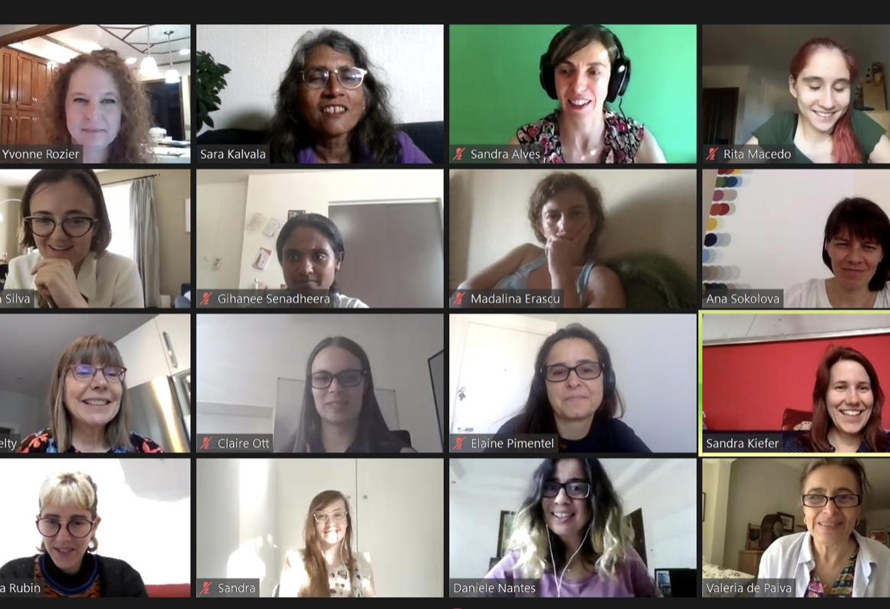

- Happy New Year 2025!
- 3rd Women in Logic ONLINE! Talk by Francesca Poggiolesi, Friday, January 24, 2025 at 17:00 CEST. official announcement.
- Women in Logic 2024 – 9 July 2024, Tallin, Estonia, was a big success. see the website.
- Women in Formal Mathematics, 6-7 July 2024, Bonn, Germany, see the website
- Women in Logic Online: a new series of online talks at VCLA (Vienna Center for Logic and Algorithms). Started in 15 March 2024

About us
Women in Logic (WiL) aims to provide a forum that brings together women working on logical issues, from foundations of computer science to philosophy, including mathematical logic, logics for AI and logical approaches to language. Our goal is to enhance the experience of women in logic and closely related areas, making achievements of women in logic known to these communities, and thereby increasing the number of women in logic.
Our flagship event is the annual WiL Workshop.
- You can read about our previous workshops and find links to their individual websites on the workshops page.
- You can see some of the data we collected showcasing the disregard for women in academia.
- We appreciate any comments and suggestions that you may have to make this website better: see how to get in touch with us on our contact page.
Thank you for all you do to improve the situation for women in logic,
Valeria (for the Steering Committee)
Structure

- Women in Logic (WiL) is a collective whose flagship event is an annual workshop, also called Women in Logic.
- Together with community organizers, WiL is convened by a Steering Committee (SC) whose composition and function are specified in the next section.
- Each workshop has a Program Committee (PC) that is responsible for the scientific content of the program.
- Each workshop has at least 2 Conference Organizers who are responsible for the PC composition, as well as local organization, finances, publicity, and liaison with sponsors. Conference Organizers should refrain from submitting papers to the Workshop.
- WiL annually requests “in-cooperation status” with the ACM SIGLOG.
- Modifications of these bylaws are submitted to the SC Chair and require the approval of the SC.
Women in Logic Steering Committee
- The purpose of the Steering Committee (SC) is to ensure the long-term success of the WiL collective.
- The SC selects the location, date, and Conference Organizers of each symposium.
- PC and Conference Organizers are just a useful fiction for co-chairs, who divide the work the best way they can.
- The SC may consist of the PC and Conference Organizers of the last 3 symposia and one member of the SIGLOG executive committee.
- The SIGLOG representative is appointed by the chair of SIGLOG, subject to approval by the chair of the WiL steering committee, and ensures coordination between SIGLOG and other SIGLOG affiliated events; once every three years when the SIGLOG executive committee changes, the SIGLOG representative may change.
- The SC elects its own chair shortly after the end of each workshop.
- The decisions of the SC require at least 50% of the votes and a simple majority.
The current composition of the SC is as follows:
Previous members of the SC include:
Supporters
We also thank Tim Hosgood for technical help.